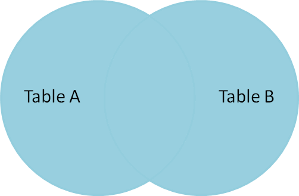
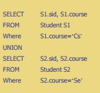
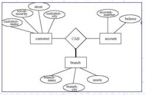
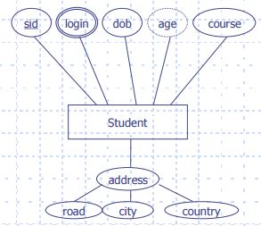
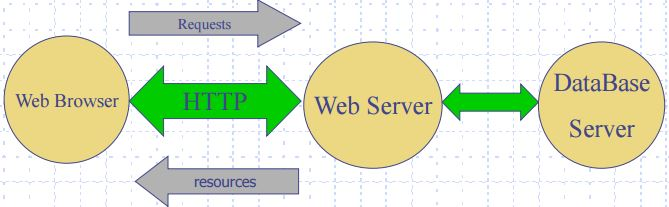

As the world we are living in today gets more connected, we start to question how to store and share data. Data can be stored in many ways, for instance by memory, written documents, computer Java objects, XML data files, and so on. Data can also be shared through again, memory, sharing files locally in computers, having a document repository, or even data servers.
All of these have their applications, but what if we need something that integrates with existing systems? This is where databases comes in.
Database is a structured set of data held in a computer, especially one that is accessible in various ways.
Database management system (DBMS) is a core data base, which is a representation of data that can be used for retrieval and maintenance.
There are many database models, but relational databases are the pre-eminent choice for general purpose of database systems.
In a database, we want an organised collection of data, also with some desirable properties such as the ACID below.
ACID
Atomicity ‐ a transaction happens as a whole, or not at all.
Consistency ‐ a DB is always in a consistent state.
Isolation ‐ the effect of two operations happening in parallel is the same as if they had happened sequentially.
Durability ‐ once something is stored it won't disappear.
Relational Database
This is the main model for database systems. Data is structured in the form of set and relations, and is connected using basic set theory. They are viewed as tables. Queries specify result and not how it is computed.
A query in database is an statement that specifies a request for information from the database. This will be explored more later on.
3 ‐ Basics
Relational databases uses the set theory to connect data around.
3.1 – Sets
Sets are collections of items. They are unordered and do not contain duplicates. They are written as: {2,4,6,8}.
Items inside a set are called elements. If all the elements of a set are also elements of a second set then the first set is a subset of the second, and the second a superset of the first. If the second set has extra elements then the first is a proper subset of the second.
Set definitions
Union ⋃ of two sets is a set made up of all elements of the two sets.
Intersection ⋂ between two sets is the set whose elements are in both operand sets.
Difference / between the first the second set is the set whose elements are in the first but not in the second.
Empty Set {} is a set without any elements.
Relational Definitions
Domain is a non-empty arbitrary set of atomic values.
Attribute name is a symbol with an associated domain.
Relational Schema is a finite set of attribute names.
Tuple of a relational schema is a mapping from the attributes of a relational schema the union of their domains.
Relation of a relationship schema is a finite set of tuples of a relational schema.
Degree or Arity of a relationship schema is the number of attributes.
Cardinality of a relation is the number of tuples or elements in a set.
3.2 – Keys
Keys are used to establish and identify relation between tables. They also ensure that each record within a table can be uniquely identified by combination of one or more fields within a table.
Super Key – a set of attributes that can always be used to differentiate one tuple from another.
Candidate Key – is a subset of a Super Key. A candidate key is a single field or the least combination of fields that uniquely identifies each record in the table. Every table must have at least one candidate key but at the same time can have several.
Concatenated Key – a key with more than one attribute.
Primary Key – a candidate key that uniquely identify each record in a table.
Foreign Key – a key that points to primary key attributes.
3.3 – Standard Query Language (SQL)
SQL provides the mechanism that is used to manipulate a relational database. The Data Definition Language (DDL) is used to create, modify and delete parts of the definition of the database. The Data Manipulation Language (DML) is used to manipulate the data.
In SQL, case and whitespaces are not significant, but there are conventions that is good to follow:
SQL keywords in upper case.
Table names capitalised.
Field names lower case.
Layout.
CREATE
CREATE TABLE Name { field1 type1, field2 type2, constraints }
This creates a table with the name, its fields inside the curly braces, and addition of constraints are possible too.
Constraints on the data should be included on one field or across several.
NOT NULL
UNIQUE
DROP
DROP TABLE Name
This deletes the table called Name. Don't just go around dropping everything now!
ALTER
ALTER TABLE Name ADD COLUMN field type
This modifies the table definition by adding nulls to the table.
Drop and alter can be applied to other things as well.
Databases are business critical so it may not be possible to rebuild them. They could be live for a very long time, so we update them 'on the fly'.
Some Types
BOOLEAN ‐ TRUE, FALSE, or NULL
CHAR(size) or CHARACTER(size) ‐ characters
VARCHAR ‐ strings
INT or INTEGER
REAL, FLOAT or DOUBLE
NUMERIC or DECIMAL
DATE ‐ date types
TIME ‐ a type of day value
4 – Constraints
Constraints place restrictions on the values that can be inserted into the database. They are hard constraints that the DBMS will check and enforce them. They are metadata used to:
Make explicit domain constraints.
Maintain the integrity of the database.
If these constraints are violated, then the operation fails.
4.1 – Primary Key
PRIMARY KEY(field) or CONSTRAINT constraintName PRIMARY KEY(field)
A primary key constraint enforces UNIQUE and NOT NULL.
Example:
CREATE TABLE Student { id INT, name VARCHAR, PRIMARY KEY (id) }
or by naming the constraint
CREATE TABLE Student { id INT, name VARCHAR, CONSTRAINT IDKey PRIMARY KEY (id) }
4.2 – Foreign Key
FOREIGN KEY (field) REFERENCES Table(field)
A foreign key defines a link (usually to a primary key) to another table
This isn't checked on insertion because it is guaranteed to be true.
Example:
CREATE TABLE Marks { id INT, mark INT, FOREIGN KEY (id) REFERENCES Student(id) }
The integrity of the database is maintained by:
Forbidding the operation
RESTRICT – is done before the operation
NO ACTION – by default, is done after
Delete rows that reference the deleted key (ON DELETE CASCADE)
Note that constraints specified in the 'child' table can affect operations on both the 'child' and 'parent' tables.
We can also enforce additional constraints over values.
Example:
CHECK(age >= 0 AND age <= 120)
5 – Data Manipulation and Query
5.1 – Data Manipulation
INSERT
Inserts data into a table.
INSERT INTO Table VALUES (data1, data2);
INSERT INTO Student (id, name) VALUES (4, 'John Doe');
UPDATE
Modify values in rows.
Specify table rows and attributes and their new values.
UPDATE Table SET field='data';
UPDATE Student SET course='CS' WHERE id=23;
If code meet conditions, then data will be updated.
DELETE
Deletes rows from the table.
DELETE FROM Table WHERE field=data;
DELETE FROM Student WHERE id=4;
Rows that meet the conditions will be deleted.
All these commands are subject to constraint checking.
5.2 – Data Query
SELECT
To retrieve data from tables:
One or more combining data from several tables.
Result is a table.
SELECT * FROM Table;
SELECT name FROM Student WHERE id=4;
SELECT Student.name, Student.id FROM Student WHERE Student.course='CS';
DISTINCT
Remove duplicate rows
SELECT DISTINCT course From Student;
AS
Attaches a label to a column.
ORDER BY
Allows the order of rows to be specified
ASC/DESC
SELECT FROM * Students ORDER BY name ASC;
And many more...
5.3 – Retrieval Criteria
WHERE
Selection criteria that can involve arbitrarily complex expressions.
AND
OR
Comparison Operators <, ≤, >, ≥.
IS [NOT] NULL
IS [NOT] TRUE
[NOT] IN
[NOT] BETWEEN
Age BETWEEN 18 AND 65
LIKE
Provides pattern matching on strings.
_ – matches any character
% – matches 0 or more characters
Name LIKE '_ob%'
6 – Joins
6.1 – Join Variations
Join returns a table specified in the query. This can be a substitute for WHERE.
For example,
If there are any ambiguity in a field name, then the table name should be included too.
SELECT S.id, M.id FROM Student S, Marks M WHERE S.id = M.id
Joins are conceptually:
Form cross product of the set of tables.
Select columns listed in the SELECT.
Select rows that meet any WHERE condition.
INNER JOIN
Produces only the set of records that match in both tables.
SELECT * FROM TableA INNER JOIN TableB ON TableA.field=TableB.field;
FULL OUTER JOIN
Produces the set of all records in TableA and TableB , matching records from both sides where available.
If there is no match, the missing side wil contain null.
SELECT * FROM TableA FULL OUTER JOIN TableB ON TableA.field=TableB.field; 
FULL OUTER JOIN* extra
Produces the set of records without intersection from both tables.
SELECT * FROM TableA FULL OUTER JOIN TableB ON TableA.field=TableB.field WHERE TableA.id IS null OR TableB.id IS null;
LEFT JOIN
Just like INNER JOIN but:
Includes rows in the left table that are not matched.
nulls are added.
SELECT * FROM TableA LEFT JOIN TableB ON TableA.field=TableB.field;
LEFT OUTER JOIN*
Produces a complete set of records from TableA but not in TableB.
SELECT * FROM TableA LEFT OUTER JOIN TableB ON TableA.field = TableB.field WHERE TableA.id IS null;
RIGHT JOIN
Just the same like LEFT JOIN, but focuses on the right table.
EQUI JOIN
Just INNER Join where the condition only includes equality.
NATURAL JOIN
Equality test is implicit based on the names of attributes.
Don't use this!
CROSS JOIN
Default without any selection.
Gives every permutation of rows in each table.
* might be useful to know.
Another notation would be
USING (field)
instead of
ON TableA.field=TableB.field
6.2 – Set Operations
A Query can be formulated as set operations on two results.
UNION
INTERSECT
EXCEPT (set difference)

6.3 – Subqueries
Subqueries may be used in the result of the outer query.
There are many operators that can be used with the sub-result:
[NOT] IN
[NOT] EXISTS
[operation] ANY
[operation] ALL
We can reference the outer row within the nested query by using its names we created for the tables.
SELECT S1.id FROM Student S1
WHERE S1.dob > ALL
( SELECT S2.dob FROM Student S2
WHERE S2.course='CS' );
6.4 – Groups
GROUP BY and HAVING allows operation over groups of rows.
GROUP BY
Specifies grouping of rows.
HAVING
Specifies selection criteria for groups.
SELECT customerName, SUM(orderQuantity)
FROM Sales
GROUP BY customerName
HAVING SUM(orderQuantity > 5);
This joins the tables, then filter rows using WHERE clause if any, then group the table using the attributes specified in the GROUP BY clause, returning one row per group. Finally, it removes rows where the HAVING clause does not return TRUE.
Exercise: Return a table which lists each student registered on course 'CS' with their average mark over all modules:
Extend to only include students with average ≥ 70;
and all marks ≥ 40.
6.5 – Views
Views provide a mechanism whereby a user can be given an alternative view onto the underlying database.
A view is specified in terms of underlying tables.
Derived Tables – A table expression that appears in the FROM clause of a query.
Base Tables – A table that contains just stored records.
This is for convenience and security.
7 – Java Database Connection
JDBC provides mechanism for connection to database systems. Interaction is in terms of strings and resultsets.
Statement object - Query is specified when executed
PreparedStatement object - Query is specified when object is created
execute(String) - Execute any SQL statement
executeUpdate(String) - For INSERT, UPDATE, DELETE, etc.
executeQuery(String) - For Query
Statement stmt = dbConn.createStatement();
// executeUpdate example
String update = "INSERT INTO Students VALUES (1, 'John Doe')";
stmt.executeUpdate(update);
// executeQuery example
String query = "SELECT * FROM Students";
ResultSet r = stmt.executeQuery(query);
while (r.next()) {
// Access field using position or name
id = r.getInt(1); // position starts from 1
id = r.getInt("id");
}
// PreparedStatement example
PreparedStatement stmt2 = dbConn.prepareStatement(query); // same thing, but SQL statement defined in constructor
ResultSet r2 = stmt2.executeQuery();
while (r2.next()) { ... }
PreparedStatements are safe from SQL Injection because SQL statements are already prepared. If statements have to take user input, then there is no guarantee the user isn't going to DROP TABLES.
About ResultSets
The default ResultSets only allows forward movement though a static table. This may be inconvenient.
So hence there are other ResultSets that will solve this issue.
Scrollable
Move to any position
Updateable
Modify ResultSet and write changes back to DB.
Dynamic
Have ResultSet updated to reflect changes in DB.
CachedRowSets
Allows work offline.
SQLException
Errors should be caught and handled appropriately. Should have multiple catch clauses for different exception classes.
Close
ResultSets, Statements and Connections should be closed when no longer needed.
Closing a connection closes all its statements.
Closing a statement closes all its resultSets.
7.2 – Transactions
Compound operations which must be performed in their entirety. Must maintain ACID.
E.g. Moving money from one account to another.
Importance of Transactions
This allows concurrent access across multiple applications and still maintain correct behaviour. It also is robust against failure.
Transaction typically maintains it's own copy of the database.
If the transaction is successful
Commit the changes in the permanent database.
If not
Changes are rolled back.
This may be because of explicit or implicit failure, conflicts with other transactions or deadlock detection.
Performance
Handling of transactions is divided as
Optimistic
Assume no problems is we detect and fix it.
Pessimistic
Assume there is a likely conflict so we prevent it.
Transactions provide an abstraction from how the DBMS implement correct behaviour.
8 – Database Design
Background
DB are part of many information systems. It is necessary to describe databases as part of design process, to document an existing system, and as part of the modification and extension of existing systems.
E.g. Requirements Analysis, Design, Coding, Testing, Maintenance, Documentation, Project Management.
Methodologies
Approaches to the task of analysing the problem, creating solutions and testing the result.
Usually include some heuristics and metrics.
Notations
Means of describing the problem, solution, and process.
Also provide means to record and communicate.
8.1 – Design with Entity Relationship (ER)
DB is usually part of some larger system. To capture data requirements, constraints, etc.
Entity Relationship
A standard way to describe the conceptual structure of a database.
Can be easily mapped to DB schema. May be partitioned for large complex designs.
Components of ER
Oval - Attributes
Rectangle - Entity Set
Double outlined boxes show weak entity set
Diamond - Relation Set
Lines - Links
Labels on line indicate role
Cardinality

Attributes and Entity
Attributes drawn in ovals.
Primary Key - underlined
Composite attributes e.g. address
Derived attributes e.g. age - dashed oval
Multivalued - double outline oval
Entity drawn in rectangles.

Relationships
Association between entities.
Names inside diamond
Lines can be labelled to define roles and can link to:
Entity sets
Attributes
Relations
Cardinality Restrictions
We can define constraints on the participation of entities in a relation.
Minimum - 0 or 1
Maximum - 1 or many
There are many ways to represent cardinality, but we will only use one here.
In this way, we specify the minimum and maximum participation in brackets.
Weak Entity Set
A set where the entities cannot be distinguished - there is no key. They can only be identified uniquely in the context of an owner.
Drawn using double lined boxes.
E.g. Dependents of an employee. Emergency contacts for a student.
8.2 – Mapping from ER to DB
The design is mapped to Tables and Constraints.
Mappings:
Entity Set ≡ Tables
Table name
Attributes
Primary Key
Weak Entity Sets ≡ Tables
Include the key of the owner entity.
Cannot exist without the owner, so bind ON DELETE CASCADE.
Relationship Sets ≡ Tables but avoid where possible
1 : 1 - Add key of one entity as foreign key of other. Move attributes of the relationship to that entity.
1 : N - Add key of N side entity as foreign key of the other. Move attributes of the relationship to that entity.
M : N - Add new relation containing the keys of the participating entities as foreign keys and the attributes of the relationship. The key of the new relation is the combination of the foreign keys.
N-ary - For each relationship, do as M : N relationship. The key is all foreign keys.
Multi-valued attributes - Add new table containing an attribute representing the attribute itself, and containing the entity's primary key as a foreign key. The key is the foreign key and one or more of the attributes.
9 – Web Applications
A Java Program may be any of the below:
Application
Installed on local machine
Runs on local machine
Access resources on local machine
Applet
Runs in Browser
Runs on local machine
Downloaded from server
Accesses remote (and possibly local) resources
Client-Server Model
Client are the users of service.
Server is the provider of service.
E.g. Web server, Mail server, DB Server, etc.
9.1 – Introduction to Web Services

Usually it is way more complex than this. E.g. Firewalls, JDBC, etc.
HTTP
Protocol is the following:
Requests
GET
POST
PUT
HEAD
DELETE
TRACE
OPTIONS
CONNECT
URL
Parameters
Deliver resources
Text(HTML)
Images
Javascript
Webserver
A webserver can either receive requests or return responses.
Receive Requests
Parse Requests
Process Requests
Returns Response
Deliver local resources
Re-direct
Error
Complex processing
It is an initially delivered static resource. Need to be able to generate dynamic content for efficiency. Also needs to process input.
9.2 – Server Side Processing
Before it was expensive to perform these requests because it needs to load and start application for every request.
Now we have Java that can help us do server side processing. There are two mechanisms:
Servlets
JSP
These are efficient for light weight processing.
9.3 – Servlets
Servlets are Java code that implements server side functions, invoked by web server to handle requests that are specified by URL.
It has access to parameters of HTTP requests, then processes it, and responds by generating a page.